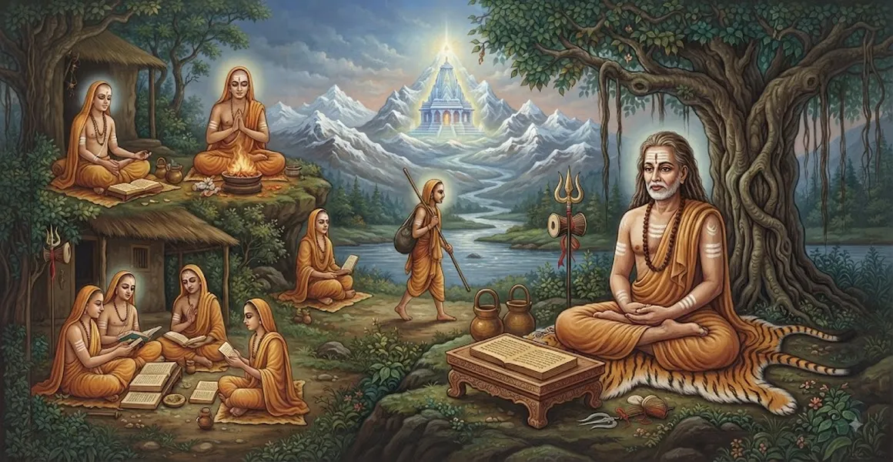

संन्यास का मार्ग
कैलाश संहिता का तीसरा अध्याय संन्यास के पवित्र अध्यादेश को प्रस्तुत करता है, जिसमें पूर्ण त्याग के लिए आवश्यक योग्यताओं, संस्कारों और मानसिकता का विवरण दिया गया है।
भगवान शिव एक आध्यात्मिक साधक की यात्रा की रूपरेखा प्रस्तुत करते हैं जो सांसारिक बंधनों को त्यागकर अपना संपूर्ण अस्तित्व महादेव के चिंतन में समर्पित कर देता है।
यह अध्याय उच्च आध्यात्मिक सिद्धांत और एक तपस्वी अभ्यासी के व्यावहारिक, अनुशासित जीवन के बीच एक सेतु का काम करता है।
अध्याय 3 की मुख्य बातें
वैराग्य की भावना
त्याग के लिए महत्वपूर्ण शर्त के रूप में भौतिक सुखों के प्रति वैराग्य पर प्रकाश डालता है।
दीक्षा संस्कार
बलि चढ़ाने और संबंधों के प्रतीकात्मक परित्याग सहित गंभीर समारोहों का विवरण।
गुरु की भूमिका
किसी प्रबुद्ध गुरु से सीधे पवित्र मंत्र और निर्देश प्राप्त करने पर जोर दिया जाता है।
त्याग के प्रतीक
लाठी, जल-पात्र और साधारण पोशाक धारण करने का आंतरिक और बाह्य अर्थ समझाता है।
महावाक्यों पर ध्यान दें
त्यागी को वेदांतिक और शैव सत्यों पर निरंतर चिंतन की ओर निर्देशित करता है।
अंतिम लक्ष्य
सर्वोच्च पुरस्कार के रूप में भगवान शिव के साथ सायुज्य (अंतरंग आध्यात्मिक मिलन) की स्थापना करता है।
इस अध्याय में मुख्य विषय
योग्यताएँ और वैराग्य की भावना
त्याग कर्तव्य से पलायन नहीं है, बल्कि गहरी आध्यात्मिक परिपक्वता और तीव्र वैराग्य (वैराग्य) की स्वाभाविक परिणति है।
जो व्यक्ति सांसारिक उपलब्धियों की क्षणभंगुर प्रकृति को समझता है, वह अपना जीवन पूरी तरह से शाश्वत शिव को समर्पित करने के योग्य हो जाता है।
प्रारंभिक संस्कार और बलिदान
त्याग के क्रम में प्रवेश करने से पहले, आकांक्षी पवित्र तर्पण करता है, पूर्वजों, देवताओं और ऋषियों को सभी आध्यात्मिक ऋण चुकाता है।
प्रजापति यज्ञ जैसे प्रतीकात्मक अनुष्ठानों के माध्यम से, साधक पवित्र अनुष्ठान अग्नि को अपने आंतरिक स्व में जमा करता है।
उपदेशक द्वारा औपचारिक दीक्षा
एक प्रबुद्ध गुरु के मार्गदर्शन में, दीक्षार्थी को पवित्र महावाक्य और प्रणव के गुप्त निर्देश प्राप्त होते हैं।
गुरु छात्र में आध्यात्मिक लौ जगाते हैं, और पूरी तरह से महादेव पर केंद्रित एक नई आध्यात्मिक पहचान प्रदान करते हैं।
संन्यास के पवित्र प्रतीकों को अपनाना
तपस्वी बुनियादी भौतिक प्रतीकों को अपनाते हैं - जैसे एकल कर्मचारी (एकदंड), जल पात्र (कमंडलु), और साधारण वस्त्र।
ये वस्तुएँ शरीर, वाणी और मन पर नियंत्रण का प्रतिनिधित्व करती हैं, जो त्यागी को उनकी अत्यंत सादगी की प्रतिज्ञा की याद दिलाती हैं।
आंतरिक त्याग बनाम बाह्य प्रतिज्ञा
धर्मग्रंथ इस बात पर जोर देते हैं कि सिर मुंडवाने या गेरुआ वस्त्र पहनने से आंतरिक शुद्धता के बिना कोई सच्चा संन्यासी नहीं बन जाता।
सच्चा त्याग दिल से अभिमान, मोह, ईर्ष्या और अहंकार को दूर करने में है।
सतत ध्यान का पथ
एक बार आरंभ करने के बाद, त्यागी बाहरी अनुष्ठानों से हटकर भगवान शिव पर निरंतर आंतरिक चिंतन की ओर ध्यान केंद्रित करते हैं।
सभी निर्मित संस्थाओं को शिव की अभिव्यक्ति के रूप में देखने से, मन अद्वैत जागरूकता में स्थिर रहता है।
अध्याय 4 की ओर
संन्यास की आध्यात्मिक नींव और दीक्षा संस्कारों को विस्तृत करने के बाद, पाठ सुचारू रूप से अध्याय 4, 'संन्यासी का दैनिक आचरण' में बदल जाता है।
अध्याय 4 त्यागी के लिए दैनिक स्नान, भिक्षा-मांग, पूजा और ध्यान कार्यक्रम के संबंध में सटीक निर्देश प्रदान करता है।
अध्याय 3 की प्रमुख शिक्षाएँ
सर्वोच्च टुकड़ी
त्याग वास्तविक आंतरिक वैराग्य से उत्पन्न होना चाहिए, न कि सांसारिक दुःख से।
पवित्र परिवर्तन
संस्कार व्यक्तिगत अहंकार की आध्यात्मिक मृत्यु और ब्रह्मांडीय चेतना में पुनर्जन्म का प्रतीक है।
गुरु मार्गदर्शन
तपस्वी पथ पर आगे बढ़ने के लिए एक सिद्ध गुरु की कृपा और दिशा-निर्देश महत्वपूर्ण हैं।
मन पर नियंत्रण
इंद्रियों और विचारों पर संयम रखना ही साधु की सच्ची लाठी और कवच है।
प्रणव ध्यान
ओंकार पर निरंतर दोहराव और चिंतन प्राथमिक आध्यात्मिक अभ्यास बनता है।
समभाव
एक सच्चा संन्यासी प्रशंसा, निंदा, सुख और दुख के बीच भी स्थिर रहता है।
आध्यात्मिक चिंतन
संन्यास का मार्ग हमें याद दिलाता है कि सच्चा त्याग एक आंतरिक यात्रा है। चाहे आश्रम में रह रहे हों या दुनिया के बीच, व्यक्तिगत इच्छाओं का समर्पण और भगवान शिव में अपनी जागरूकता स्थापित करने से आत्मा शुद्ध होती है और शाश्वत मुक्ति मिलती है।
अध्याय 3 का संदेश जीना
भौतिक वस्तुओं और सामाजिक मान्यता के लिए अत्यधिक इच्छाओं को कम करके आंतरिक वैराग्य पैदा करें।
अनुकूल और चुनौतीपूर्ण दोनों स्थितियों में शांत संतुलन बनाए रखते हुए भावनात्मक संतुलन का अभ्यास करें।
विचार प्रक्रियाओं को शुद्ध करने के लिए पवित्र ध्वनि ओम पर मौन चिंतन के लिए नियमित समय समर्पित करें।
प्रमुख आध्यात्मिक अवधारणाएँ
त्यागी जीवन शैली को नियंत्रित करने वाले पवित्र कर्तव्य और संहिताएँ।
सांसारिक इंद्रिय भोगों के प्रति गहरी वैराग्य और उदासीनता।
औपचारिक तपस्या में प्रवेश करने से पहले किया जाने वाला अंतिम अनुष्ठान बलिदान।
एकल लकड़ी का डंडा मन, शरीर और वाणी की एकता का प्रतीक है।
पानी का जहाज संतुष्टि और न्यूनतम सांसारिक जरूरतों का प्रतीक है।
निरपेक्षता से तादात्म्य प्रदान करने वाली सर्वोच्च वेदान्तिक घोषणाएँ।
अध्याय सारांश
कैलाश संहिता अध्याय 3 संन्यास अपनाने के लिए व्यापक दिशानिर्देश देता है। यह इस बात पर जोर देता है कि गहन वैराग्य (वैराग्य) आवश्यक आधार है, जिसके बाद पवित्र शुद्धिकरण संस्कार, अहंकार का त्याग और गुरु के अधीन दीक्षा होती है। पूर्ण आंतरिक शुद्धता और प्रणव ध्यान को बनाए रखते हुए छड़ी और जल-पात्र जैसे बाहरी प्रतीकों को अपनाकर, तपस्वी प्रत्यक्ष शिव-प्राप्ति के लिए तैयारी करता है, जिससे अध्याय 4 के व्यावहारिक दैनिक कर्तव्यों की ओर अग्रसर होता है।
अक्सर पूछे जाने वाले प्रश्न
1. कैलास संहिता अध्याय 3 का मुख्य विषय क्या है?
अध्याय 3 में संन्यास (त्याग) अपनाने के लिए आध्यात्मिक नियमों, योग्यताओं, प्रारंभिक संस्कारों और दार्शनिक ढांचे का विवरण दिया गया है।
2. इस अध्याय के अनुसार संन्यास लेने का पात्र कौन है?
एक साधक जिसने गहन वैराग्य (वैराग्य) प्राप्त कर लिया है, निर्धारित कर्तव्यों के माध्यम से अपने मन को शुद्ध कर लिया है, और केवल मुक्ति और शिव के साथ मिलन की इच्छा रखता है।
3. संन्यास में प्रवेश से पहले कौन सा आवश्यक संस्कार किया जाता है?
उम्मीदवार गंभीर शुद्धिकरण अनुष्ठान करता है, जिसमें प्रजापति यज्ञ, बाल मुंडवाना, सांसारिक संबंधों का त्याग करना और गुरु से पवित्र दीक्षा प्राप्त करना शामिल है।
4. संन्यास का वास्तविक आंतरिक अर्थ क्या है?
सच्चा संन्यास केवल संपत्ति का बाहरी परित्याग नहीं है, बल्कि अहंकार, इच्छाओं और सांसारिक पहचान से आंतरिक वैराग्य है।
5. अध्याय 3 अध्याय 4 से कैसे जुड़ता है?
अध्याय 3 त्याग के लिए रूपरेखा और दीक्षा संस्कार बताता है, जबकि अध्याय 4 ('संन्यासी का दैनिक आचरण') व्यावहारिक दिनचर्या और दैनिक अनुष्ठानों की रूपरेखा बताता है।
6. संन्यास के मार्ग में गुरु की क्या भूमिका है?
गुरु दीक्षा के माध्यम से साधक का मार्गदर्शन करते हैं, महावाक्य और प्रणव मंत्र प्रदान करते हैं, और आत्मा को सीधे शिव-प्राप्ति की ओर निर्देशित करते हैं।
"त्याग कर्मों का परित्याग नहीं है, बल्कि भगवान शिव की प्रकाशमान लौ में अहंकार और इच्छा का पूर्ण समर्पण है।"
कैलाश संहिता के माध्यम से जारी रखें
अध्याय 3 संन्यास के मार्ग की पड़ताल करता है। अध्याय 4, संन्यासी का दैनिक आचरण जारी रखें।